NHANES 건강 데이터 EDA 리포트
개인 건강위험 체크 및 생활습관 개선 시뮬레이터 개발을 위한 기초 분석
주요 분석 변수 정의
| 카테고리 | 변수명 (Code) | 설명 (Description) |
|---|---|---|
| 인구통계 | RIAGENDR, RIDAGEYR | 성별 (1:남, 2:여), 연령 (세) |
| 신체계측 | BMXBMI, BPXSY1, BPXDI1 | 체질량지수(BMI), 수축기 혈압, 이완기 혈압 |
| 임상검사 | LBXSGL, LBXGH, LBXTC... | 공복혈당, 당화혈색소, 총콜레스테롤, LDL, 중성지방, HDL |
| 영양섭취 | DR1TKCAL, DR1TSUGR, DR1TSODI | 일일 총 칼로리, 설탕 섭취량, 나트륨 섭취량 |
| 생활습관 | PAQ605, SLD010H, SMQ020 | 격렬한 신체활동 여부, 일일 평균 수면 시간, 흡연 경험 |
| 체중 이력 | WHD050, WHD140, WHQ040 | 현재 체중, 생애 최대 체중, 다이어트 시도 여부 |
당뇨 유병률
고혈압 유병률
비만 유병률
다이어트 성공률
1. 타겟 질환 유병률 분포
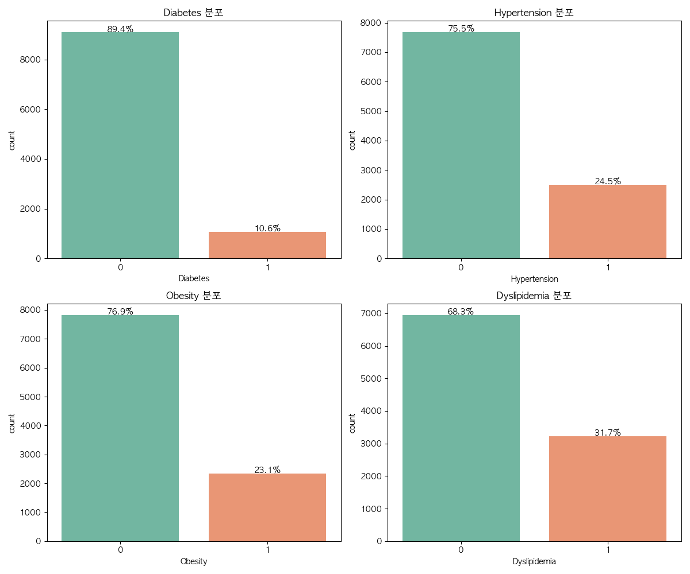
Analysis Insights
고지혈증(31.7%)이 분석 대상 질환 중 가장 높은 유병률을 보였으며, 비만(23.1%)과 고혈압(24.5%)이 뒤를 이었습니다. 당뇨는 약 10.6%로 나타났으나, 이는 공복혈당과 당화혈색소 지표를 결합한 결과로 잠재적 위험군을 포함한 수치입니다.
1-1. 동반 질환(Comorbidity) 분석
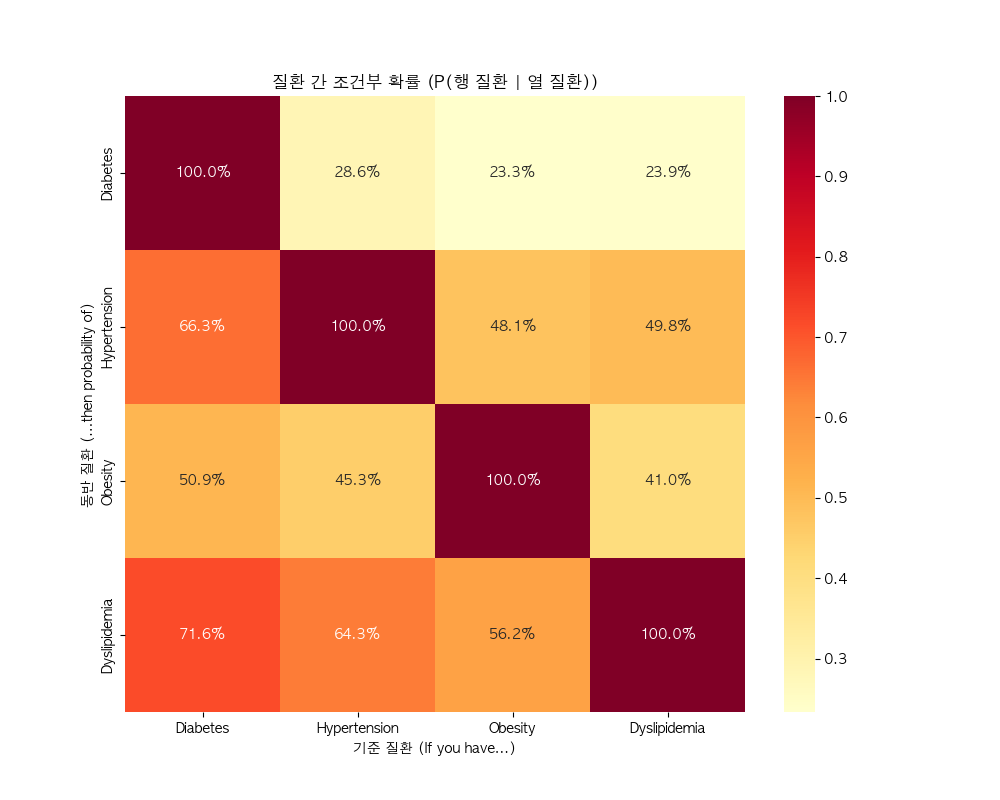
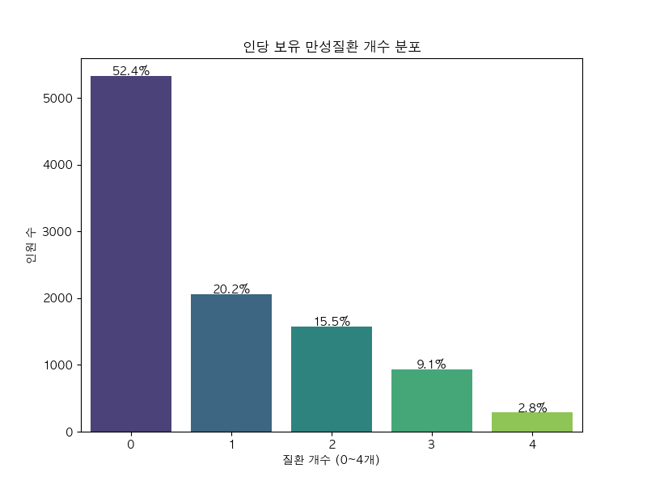
Comorbidity Insights
분석 대상자의 27.4%가 2개 이상의 만성질환을 동시에 보유하고 있습니다. 특히 당뇨 환자의 66.3%가 고혈압, 71.6%가 고지혈증을 동반하고 있어 당뇨의 전신 합병증 위험이 매우 높음을 확인했습니다.
분석 결론: 가장 주의해야 할 핵심 위험 요인
위험의 뿌리: 비만 (The Root Trigger)
비만인 그룹은 정상 체중 그룹에 비해 **동반 질환을 보유할 위험이 2.63배 높게** 나타났습니다. 비만 그룹의 평균 동반 질환 개수는 1.28개로, 정상 그룹(0.49개)의 약 3배에 달합니다.
합병증의 정점: 당뇨 (The Peak Complication)
일단 **당뇨(Diabetes)**가 발생하면 고혈압이나 고지혈증을 동반할 확률이 70%를 상회합니다. 이는 당뇨가 전신 혈관 건강을 좌우하는 '위험의 정점'임을 보여줍니다.
다이어트 성공 요인 분석
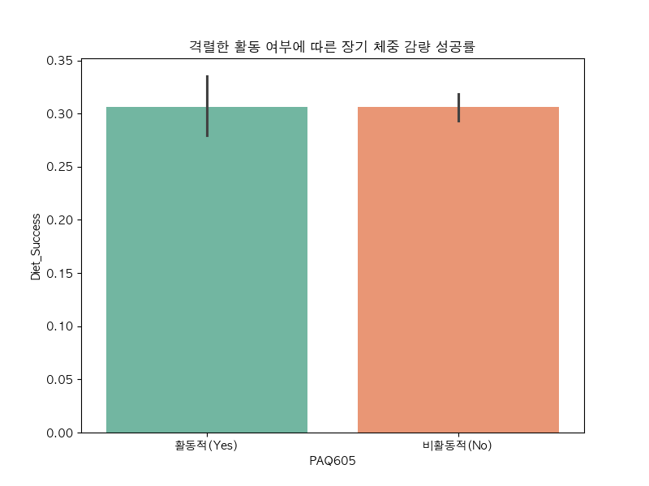
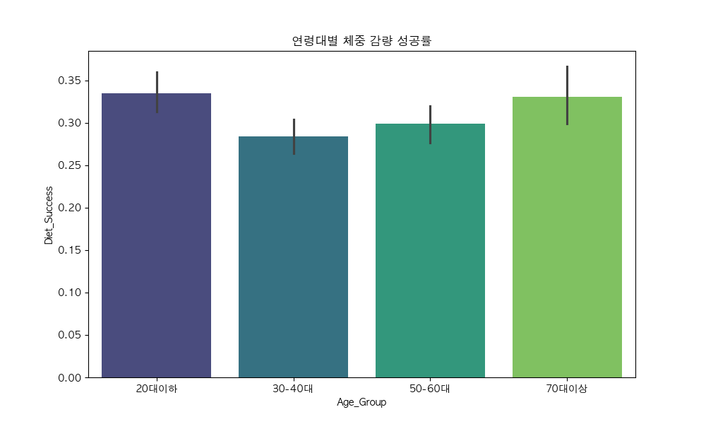
Success Insights
성공 정의: 생애 최대 체중 대비 10% 이상 감량을 유지하고 있는 경우를 '다이어트 성공'으로 정의했습니다.
분석 결과: 분석 대상자의 **30.6%**가 장기 감량 유지에 성공했습니다. 연령대별로는 **20대 이하와 70대 이상**에서 성공률이 상대적으로 높게 나타났으며, 활동량 데이터만으로는 장기적인 감량 유지 여부를 완전히 설명하기 어려운 복합적인 양상을 보였습니다.
2. 결측치 분포 분석
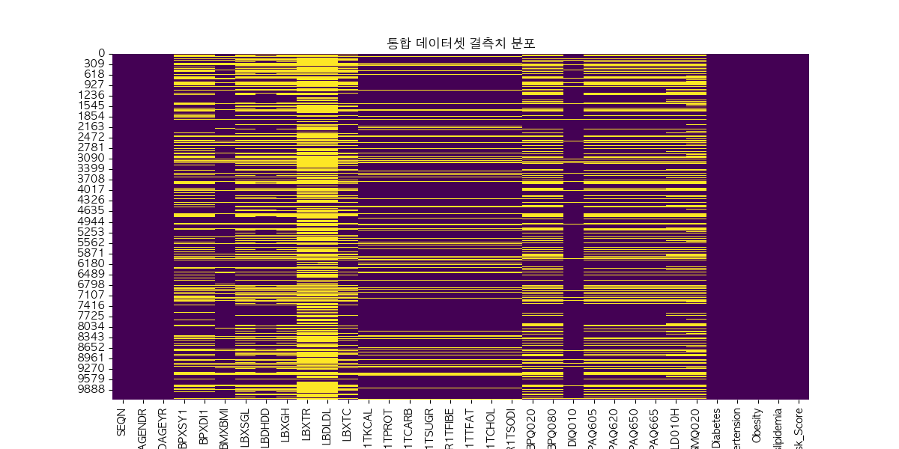
Analysis Insights
검사(Labs) 및 설문(Questionnaire) 데이터에서 특정 연령대나 성별 그룹에만 질문된 항목들의 결측치가 두드러지게 나타납니다. 머신러닝 모델링 시 하위 그룹 분석(Sub-group Analysis)을 병행하거나 KNN Imputer 등을 활용한 정교한 전처리 전략이 필수적입니다.
3. 주요 지표 간 상관관계
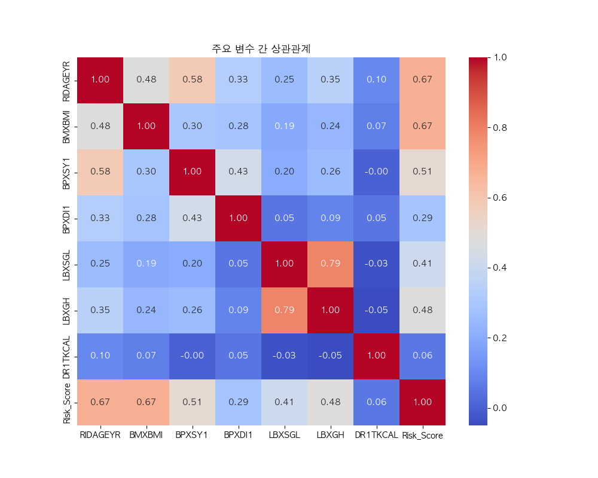
Analysis Insights
연령(RIDAGEYR)은 통합 위험 점수(Risk_Score, 0.67)와 가장 강한 상관관계를 보여 노화가 만성질환의 주요 인자임을 확인했습니다. BMI 또한 위험 점수(0.67) 및 수축기 혈압(0.30)과 유의미한 양의 상관관계를 나타내어 비만 관리가 질환 예방의 핵심임을 시사합니다.
4. 연령대별 만성질환 유병률
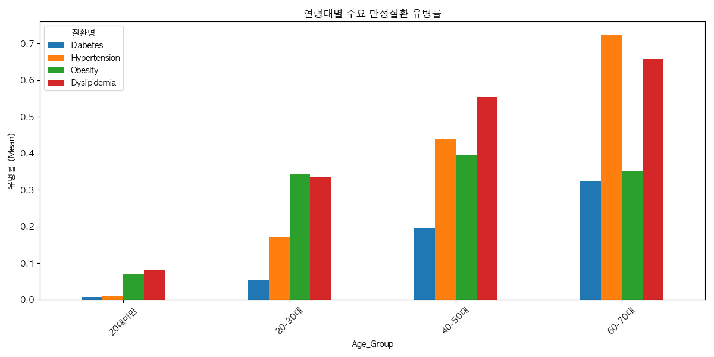
Analysis Insights
60-70대 연령층에서 당뇨, 고혈압, 고지혈증의 유병률이 급격히 증가하는 '계단식 상승' 패턴이 확인됩니다. 특이점으로는 비만 유병률이 40-50대에서 정점을 찍고 고령층으로 갈수록 소폭 감소하는 경향을 보여, 연령대별 중점 관리 질환이 달라져야 함을 보여줍니다.
5. BMI와 혈압의 관계
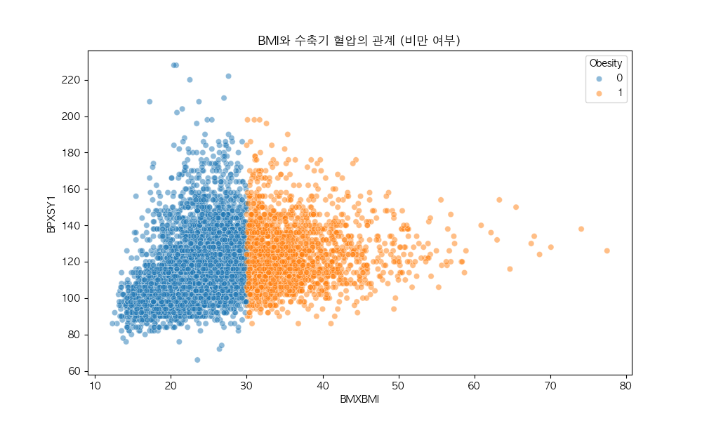
Analysis Insights
BMI가 증가함에 따라 수축기 혈압(SBP)이 선형적으로 상승하는 뚜렷한 추세가 확인됩니다. 특히 BMI 30 이상의 비만 그룹(주황색)에서 고혈압 위험 데이터가 밀집되어 있으며, 이는 비만과 고혈압이 밀접한 병리학적 연관성을 가짐을 데이터로 증명합니다.
6. 식습관과 당뇨의 관계
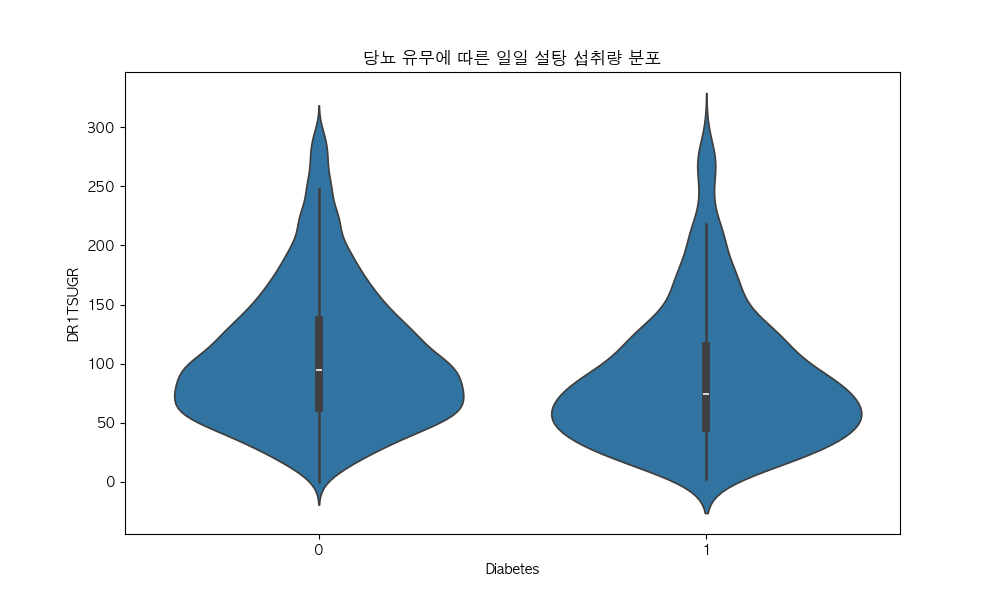
Analysis Insights
당뇨 환자 그룹의 일일 설탕 섭취량 분포가 오히려 정상 그룹보다 낮은 경향을 보이는데, 이는 진단 이후 적극적인 식단 관리를 수행 중인 응답자들이 포함되었기 때문으로 보입니다. 인과관계를 명확히 하기 위해 진단 시점과 식단 변화 데이터를 추가로 검토할 필요가 있습니다.
7. 신체활동 및 생활습관의 영향
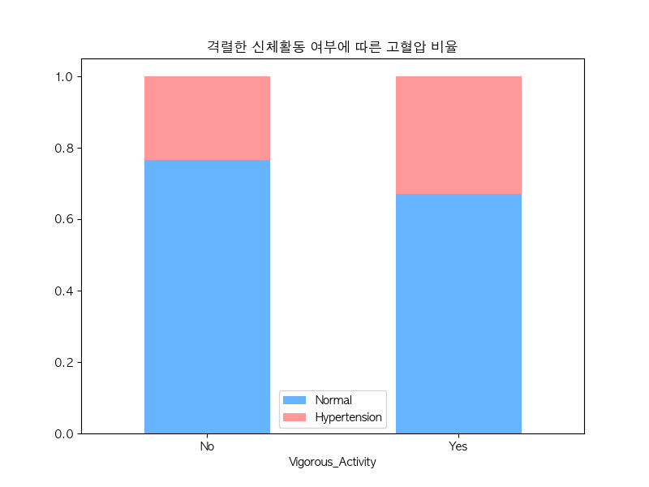
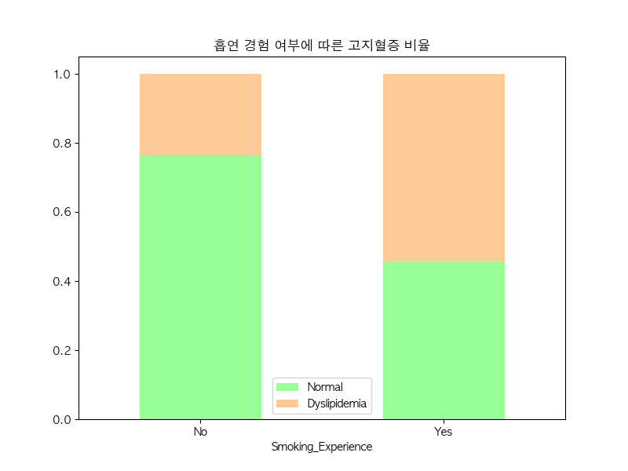
Analysis Insights
신체활동: 격렬한 활동(Vigorous Activity)을 규칙적으로 하는 그룹에서 고혈압 비율이 상대적으로 낮게 관찰되어 운동의 예방 효과를 확인했습니다.
흡연: 흡연 경험이 있는 그룹에서 고지혈증 유병률이 소폭 높게 나타나 혈중 지질 농도에 악영향을 줄 수 있음을 시사합니다.
질환별 핵심 관련 변수 요약
당뇨 (Diabetes)
연령(RIDAGEYR), BMI, 설탕 섭취량(DR1TSUGR), 당화혈색소(LBXGH), 공복혈당(LBXSGL)
고혈압 (Hypertension)
연령, BMI, 나트륨 섭취량(DR1TSODI), 신체활동량(PAQ), 수축기/이완기 혈압
비만 (Obesity)
연령, 일일 칼로리(DR1TKCAL), 수면 시간(SLD010H), 신체활동량
고지혈증 (Dyslipidemia)
연령, 지방 섭취량(DR1TTFAT), 흡연 여부(SMQ020), 각종 콜레스테롤 수치(TC, LDL, HDL, TR)
결론 및 향후 모델링 방향
핵심 인사이트
연령과 BMI가 만성질환의 가장 강력한 예측 인자이며, 다수의 질환을 동시에 보유한 복합 질환자가 많아 통합 관리가 중요합니다.
데이터 한계 극복
설문 및 영양 데이터의 결측치와 역인과관계를 고려하여, 편향을 줄일 수 있는 특성 공학(Feature Engineering)에 집중할 예정입니다.
다음 단계
KNN Imputer를 통한 데이터 완성, XGBoost 기반의 질환별 위험 예측 모델 구축, 그리고 Streamlit 대시보드 배포를 진행합니다.